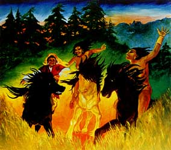

|
 Amazons / High Risk
Recently, burials of Sauromatian women warriors have turned up at Pokrovka on the border of Kazakhstan. These were people Herodotus described as descendants of the Amazons. In the 5th century BCE, as many as 14% of burials at Pokrovka were females equipped with various weapons. More on the excavations
at Pokrovka
|
The Amazons described by the Greeks - the Libyan Amazons and the Black Sea Amazons - are only part of the story. Turkic peoples of central Asia had their own Amazon traditions. In a Karakalpak epic, the wise maiden Gulaim refused marriage and lived in a fortress with her forty maidens, defending the land from an invading shah. Further northeast in Siberia, olonkho epics of the Yakut tell of women warriors called d"ege baba.
|
Shamanic | Deasophy | Kindreds | Order
Copyright 2000 Max Dashu